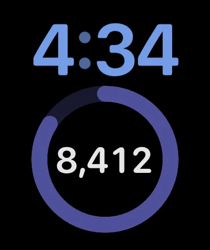
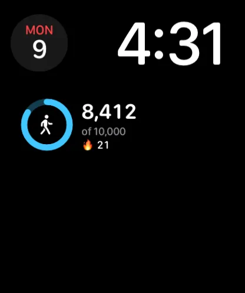

How to put a step counter on your Apple Watch face
Apple Watch tracks your steps all day in Apple Health, but Apple's built-in Activity complication shows Move, Exercise, and Stand rings — not your step count. To see steps on your watch face, you need a third-party complication.
Add a step complication to a watch face
- Install a watchOS step app that offers complications (such as Tallyfoot) and grant read access to Apple Health Steps and Motion.
- Press and hold your current Apple Watch face, then tap Edit.
- Swipe left to the Complications screen and tap a compatible slot (faces like Modular Duo or X-Large give a step ring the most room).
- Scroll to the app name, pick the step complication layout you want, and press the Digital Crown to save.
If your watch face uses a monochrome or tinted style, watchOS draws every complication in the face's tint color. Full-color faces use the app's own ring color.


Why watch-face step counts lag slightly behind the app
This catches almost every new Apple Watch owner by surprise: no third-party complication can tick upward on every single step.
To preserve battery life, watchOS enforces a daily background refresh budget on every watch-face widget. Most step complications ask watchOS for a refresh roughly every 15 minutes. Whenever you want the exact live total right now, tap the complication to open the watch app — opening the app reads your latest total immediately and refreshes the watch face too.
Free Apple Watch step complications (no forced subscription)
Many step trackers on the App Store push weekly or yearly subscriptions just to put a number on your wrist. Three well-regarded options let you keep a step count on your watch face for free:
| App | Pricing | Best for |
|---|---|---|
| Pedometer++ | Free core app; optional paid tier for extras | Long-running favorite with many complication styles, distance/floor charts, and extra workout features. |
| Duffy | Free with optional tip jar | Minimalists who want a clean, lightweight step number and goal bar without extra clutter. |
| Tallyfoot | Free — no accounts, ads, tracking, or IAPs | People who want a dedicated daily step ring on their watch face plus streaks with built-in rest days, sick days, and weekly days off. |
Keeping a step streak without losing it to a sick day
One frustration with standard step goals and Apple's native Activity rings is that one day in bed with a cold resets a multi-week streak to zero. In Tallyfoot, six consecutive goal days earn a banked rest day that automatically protects your streak if you miss a day. You can also mark a sick day on any of the last 7 days or set weekly days off in Settings — neither breaks your streak.
On first launch, Tallyfoot reads your existing step history from Apple Health so your current streak carries over automatically. All data stays on your own devices and never leaves for an external server.